Pod是Kubernetes的最小调度单位，包含一个或者多个容器（比如Docker容器），容器间共享网络和存储。这节主要记录什么是静态Pod，Pod容器如何共享存储，如何使用ConfigMap管理Pod配置，如何使用Downward API获取Pod信息等。
静态Pod
静态Pod是由kubelet创建并管理的特殊的Pod，无法和Pod管理对象关联，并且不能通过API Server关联。创建静态Pod有配置文件方式和HTTP方式：
配置文件方式
在搭建Kubernetes集群的时候，从启动Master节点的日志可以看出，静态Pod的目录位于/etc/kubernetes/manifests：
在该目录下创建静态Pod文件：
1 | cd /etc/kubernetes/manifests |
内容如下所示：
1 | apiVersion: v1 |
过了一会查看Pod：
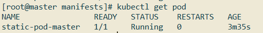
于静态Pod无法通过API Server直接管理，所以在Master上尝试删除这个Pod时，会使其变成Pending状态，且不会被删除。
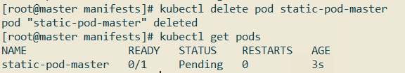
删除该Pod的操作只能是到其所在Node上将其定义文件static-pod.yaml从/etc/kubernetes/manifests目录下删除：
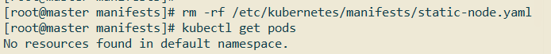
HTTP方式
过设置kubelet的启动参数--manifest-url，kubelet将会定期从该URL地址下载Pod的定义文件，并以.yaml或.json文件的格式进行解析，然后创建Pod。
Pod容器共享Volume
同一个Pod的多个容器间可以共享Pod级别的Volume，举个例子：
1 | vim pod-volume.yml |
内容如下所示：
1 | apiVersion: v1 |
上面Pod定义中，创建了一个Pod级别的Volume，名称为logs，类型为emptyDir。这个Volume同时挂载到了tomcat的/usr/local/tomcat/logs目录下，也挂载到了busybox的/logs目录下。
创建该Pod：
1 | kubectl create -f pod-volume.yml |
这里的tomcat镜像比较大，大概有500MB左右，所以在创建之前，最好在Kubernetes集群的每个节点中配置Docker镜像加速地址。
当pod-volume状态为ready后，查看busybox的日志：
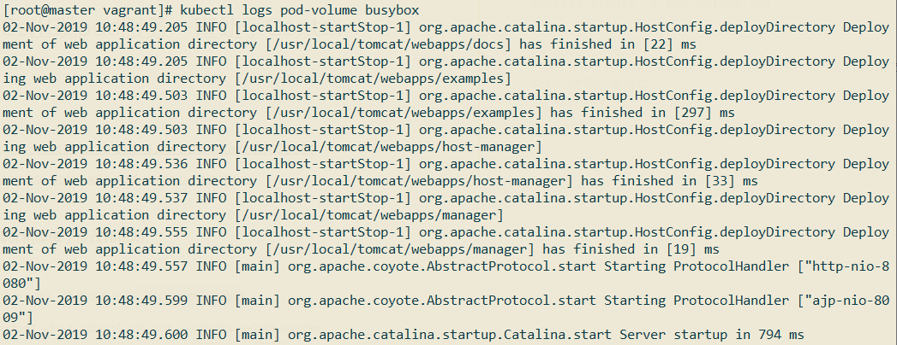
该日志为tomcat的启动日志，说明上面挂载的Volume生效了，可以通过查看tomcat/usr/local/tomcat/logs目录下和busybox/logs目录下的内容来证明这一点：
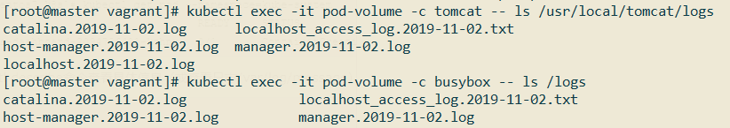
ConfigMap
ConfigMap以一个或多个key:value的形式保存在Kubernetes系统中供应用使用，既可以用于表示一个变量的值（例如version=v1），也可以用于表示一个完整配置文件的内容（例如server.xml=<?xml...>...）。
创建ConfigMap
创建ConfigMap主要有两种方式：
1.通过yml文件创建
创建simple-cm.yml文件，内容如下所示：
1 | apiVersion: v1 |
该ConfigMap仅包含两个简单的值version和releases。
创建该ConfigMap：
1 | kubectl create -f simple-cm.yml |
查看该ConfigMap：
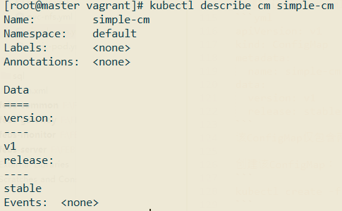
在定义ConfigMap的时候，value除了可以使用简单的值外，还可以是整个配置文件的内容。
创建file-cm.yml，内容如下所示：
1 | apiVersion: v1 |
创建该ConfigMap：
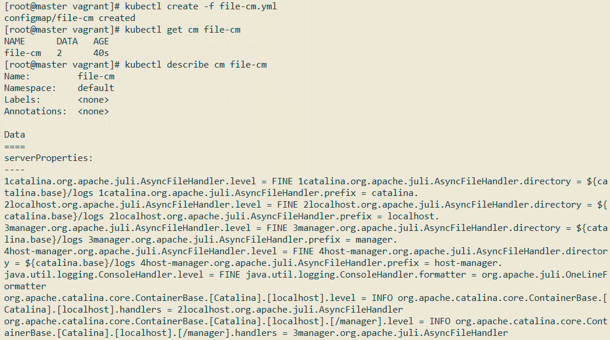
2.直接通过Kubectl命令创建
通过kubectl命令创建ConfigMap主要有以下三种用法：
通过–from-file参数从文件中进行创建，可以指定key的名称，也可以在一个命令行中创建包含多个key的ConfigMap，语法为：
1
kubectl cerate configmap [NAME] --from-file=[key=]source --from-file=[key=]source
通过–from-file参数从目录中进行创建，该目录下的每个配置文件名都被设置为key，文件的内容被设置为value，语法为：
1
kubectl cerate configmap [NAME] --from-file=config-file-dir
使用–from-literal时会从文本中进行创建，直接将指定的key#=value#创建为ConfigMap的内容，语法为：
1
kubectl cerate configmap [NAME] --from-literal=key1=value1 --from-literal=key2=value2
比如使用kubectl命令创建一个和simple-cm效果一样的ConfigMap：
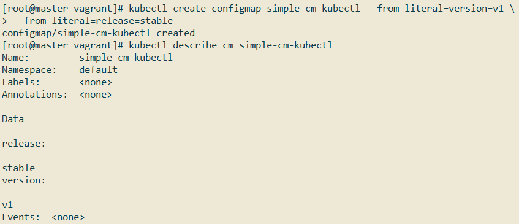
使用kubectl命令创建一个和file-cm效果一样的ConfigMap：
首先在当前目录下准备好两个配置文件server.xml和server.properties：
然后使用kubectl命令创建：
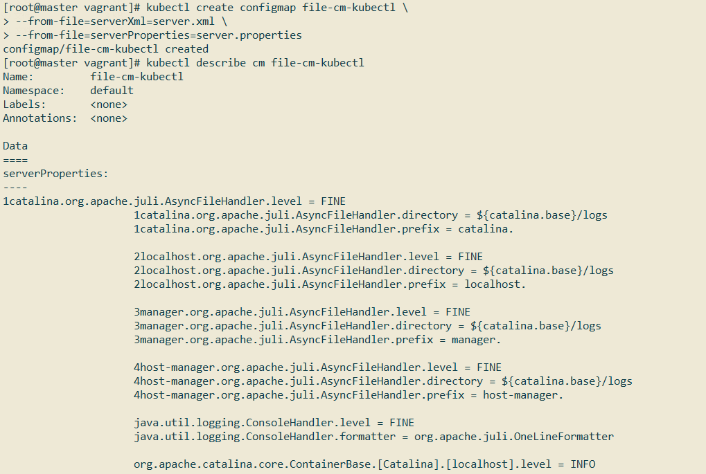
Pod容器使用ConfigMap
Pod的容器要使用ConfigMap主要有两种方式：
- 通过环境变量获取ConfigMap中的内容;
- 通过Volume挂载的方式将ConfigMap中的内容挂载为容器内部的文件或目录。
通过环境变量的方式
创建一个Pod配置（simple-cm-pod.yml）：
1 | apiVersion: v1 |
创建该Pod，并查看日志：
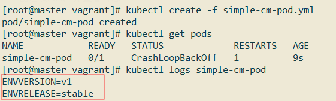
可以看到，值已经成功从ConfigMap里去到了。
如果要引用某个ConfigMap的所有内容，可以使用下面这种方式。定义一个Pod配置（simple-cm-pod-all.uyml）：
1 | apiVersion: v1 |
创建该Pod，并查看日志：
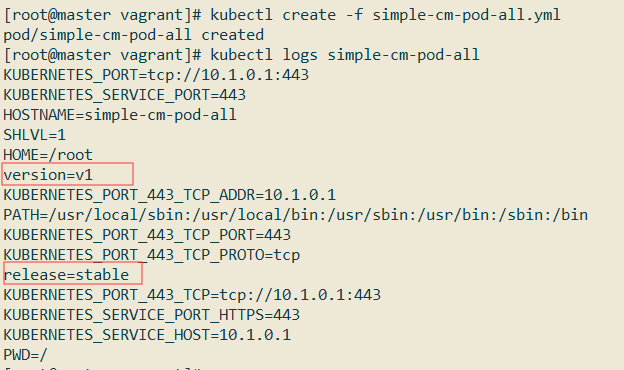
通过Volume挂载的方式
创建一个Pod配置（file-cm-pod.yml）：
1 | apiVersion: v1 |
创建该Pod，并进入到容器内部观察/configs目录下文件内容：
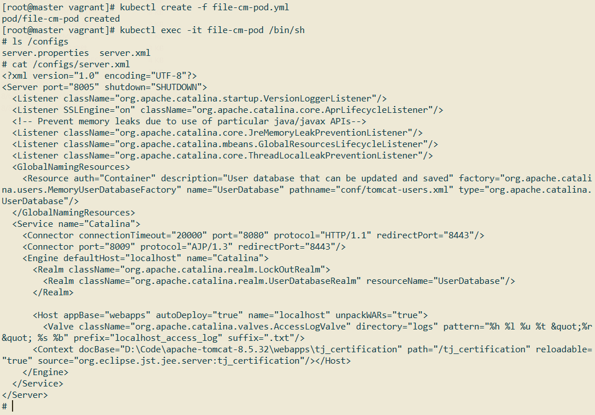
可以看到名称为file-cm的ConfigMap内容已经成功挂载到了tomcat容器内部。
如果在引用ConfigMap时不指定items，则使用volumeMount方式在容器内的目录下为每个item都生成一个文件名为key的文件。
在Pod对ConfigMap进行挂载（volumeMount）操作时，在容器内部只能挂载为“目录”，无法挂载为“文件”。在挂载到容器内部后，在目录下将包含ConfigMap定义的每个item，如果在该目录下原来还有其他文件，则容器内的该目录将被挂载的ConfigMap覆盖。
Downward API
Downward API用于将Pod相关信息注入到容器内部，主要有环境变量和Volume挂载两种方式。
环境变量
创建一个Pod配置（dapi-pod.yml）：
1 | apiVersion: v1 |
创建该Pod，并查看日志：
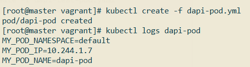
通过环境变量的方式还可以将容器的requests和limits信息注入到容器的环境变量中，创建一个Pod配置（dapi-pod-container-vars.yml）：
1 | apiVersion: v1 |
创建该Pod并观察日志：
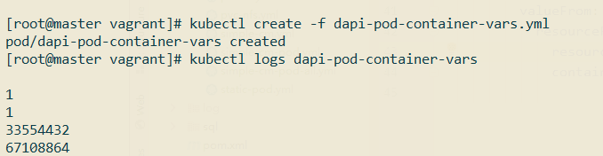
通过Volume挂载
我们可以通过Downward API将Pod的Label，Annotation等信息挂载到容器内部文件中，新建一个Pod配置（dapi-pod-volumes.yml）：
1 | apiVersion: v1 |
创建该Pod，并进入到容器/podinfo目录观察结果：
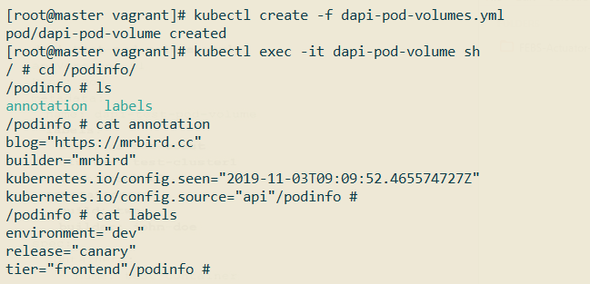
Pod生命周期
| 阶段 | 描述 |
|---|---|
| Pending | Pod 已被 Kubernetes 接受，但尚未创建一个或多个容器镜像。这包括被调度之前的时间以及通过网络下载镜像所花费的时间，执行需要一段时间。 |
| Running | Pod 已经被绑定到了一个节点，所有容器已被创建。至少一个容器正在运行，或者正在启动或重新启动。 |
| Succeeded | 所有容器成功终止，也不会重启。 |
| Failed | 所有容器终止，至少有一个容器以失败方式终止。也就是说，这个容器要么已非 0 状态退出，要么被系统终止。 |
| Unknown | 由于一些原因，Pod 的状态无法获取，通常是与 Pod 通信时出错导致的。 |
三种重启策略：
- Always：当容器失效时，由kubelet自动重启该容器；
- OnFailure：当容器终止运行且退出码不为0时，由kubelet自动重启该容器；
- Never：不论容器运行状态如何，kubelet都不会重启该容器。
结合Pod的状态和重启策略，以下为一些常见的状态转换场景：
| Pod包含的容器数 | Pod当前的状态 | 发生事件 | Pod的结果状态 | ||
| RestarPolicy=Always | RestartPolicy=OnFailure | RestartPolicy=Never | |||
| 包含1个容器 | Running | 容器成功退出 | Running | Succeeded | Succeeded |
| 包含1个容器 | Running | 容器失败退出 | Running | Running | Failed |
| 包含两个容器 | Running | 1个容器失败退出 | Running | Running | Running |
| 包含两个容器 | Running | 容器被OOM杀掉 | Running | Running | Failed |
《Kubernetes权威指南(第4版)》读书笔记